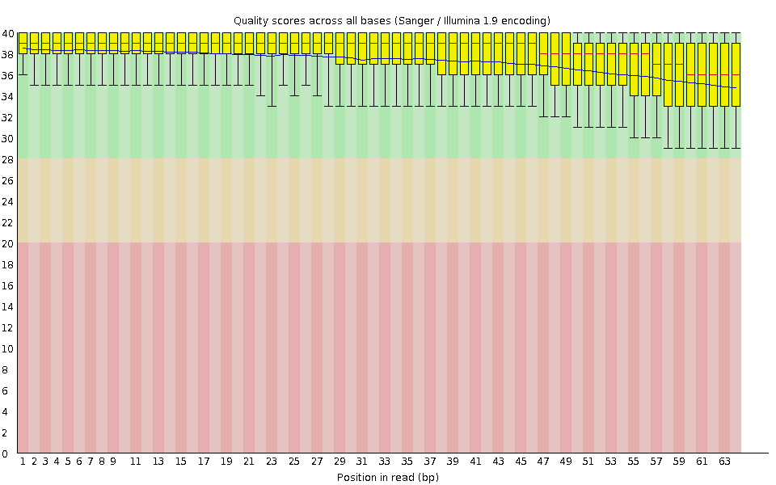
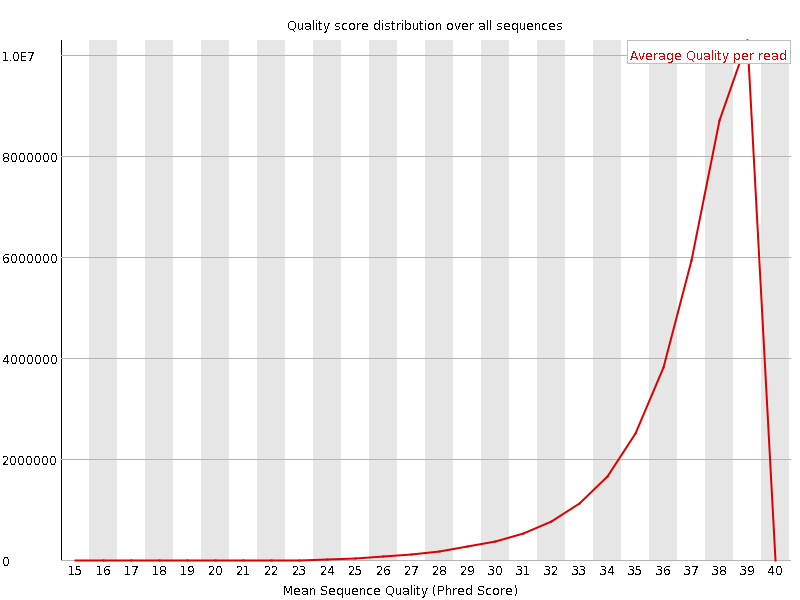
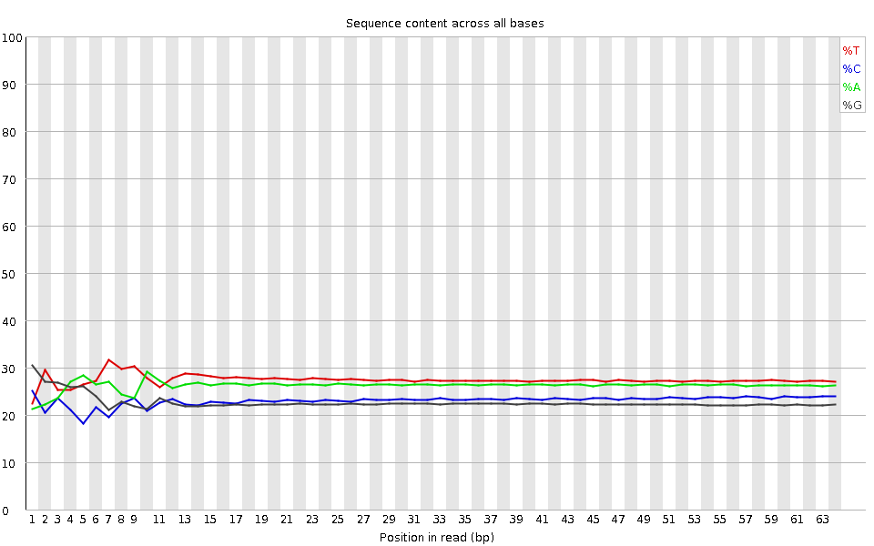
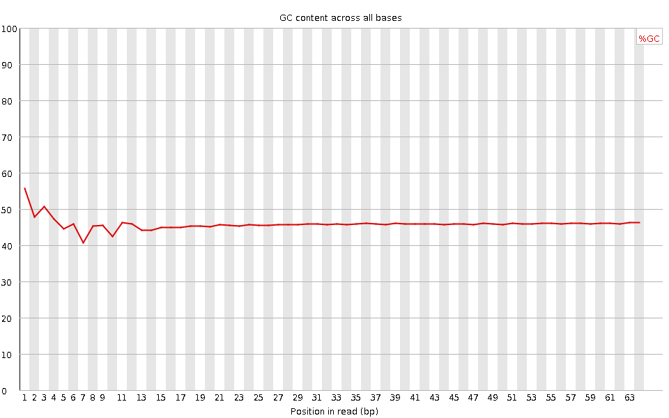
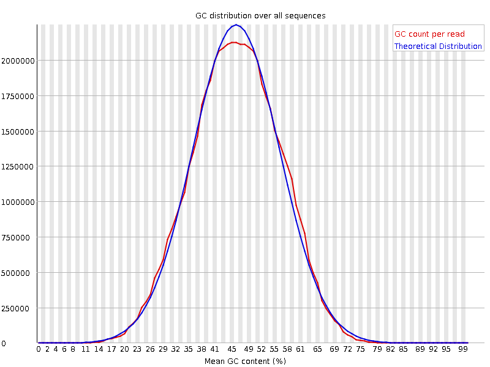
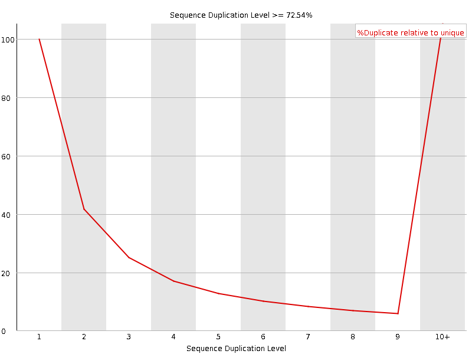
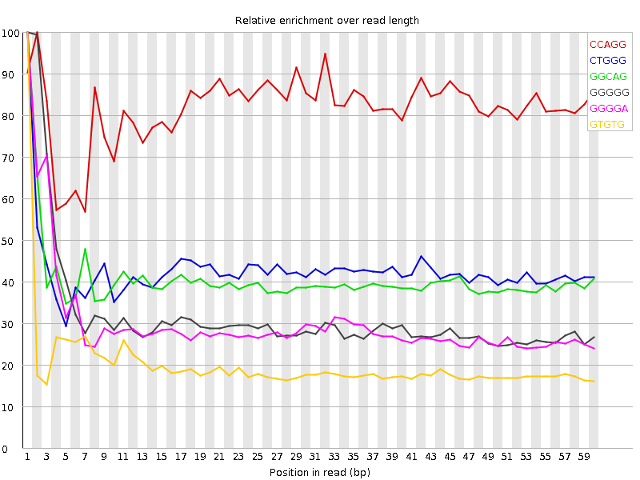

![[OK]](Icons/tick.png) Basic Statistics
Basic Statistics
| Measure | Value |
|---|---|
| Filename | SRR315314_pe_1.f.fastq |
| File type | Conventional base calls |
| Encoding | Sanger / Illumina 1.9 |
| Total Sequences | 36637958 |
| Filtered Sequences | 0 |
| Sequence length | 64 |
| %GC | 46 |
Per base sequence quality

Per sequence quality scores

![[WARN]](Icons/warning.png) Per base sequence content
Per base sequence content

Per base GC content

Per sequence GC content

Per base N content

Sequence Length Distribution

![[FAIL]](Icons/error.png) Sequence Duplication Levels
Sequence Duplication Levels

Overrepresented sequences
No overrepresented sequences
Kmer Content

| Sequence | Count | Obs/Exp Overall | Obs/Exp Max | Max Obs/Exp Position |
|---|---|---|---|---|
| CCAGG | 4928460 | 3.0269294 | 3.6962802 | 2 |
| CTGGG | 3997720 | 2.388628 | 5.6061997 | 1 |
| GGCAG | 3654770 | 2.281094 | 5.619334 | 1 |
| GGGGG | 2291250 | 1.680109 | 5.291216 | 1 |
| GGGGA | 2535595 | 1.6082555 | 5.3592763 | 1 |
| GTGTG | 2528720 | 1.271429 | 6.344273 | 1 |
| TGTGT | 3035090 | 1.263648 | 5.2523317 | 2 |
| GTACA | 2194860 | 0.98121303 | 5.1612864 | 5 |
| CGGGG | 1214935 | 0.8766495 | 5.7595706 | 1 |
| GTGTA | 1827235 | 0.7946867 | 5.040197 | 3 |